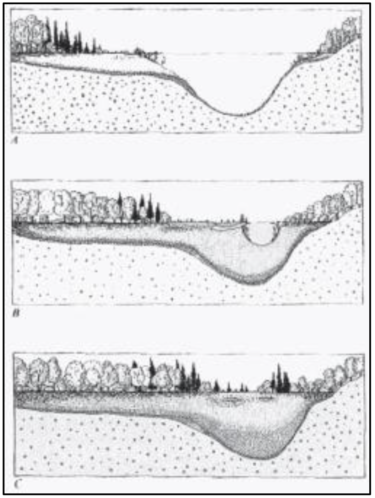
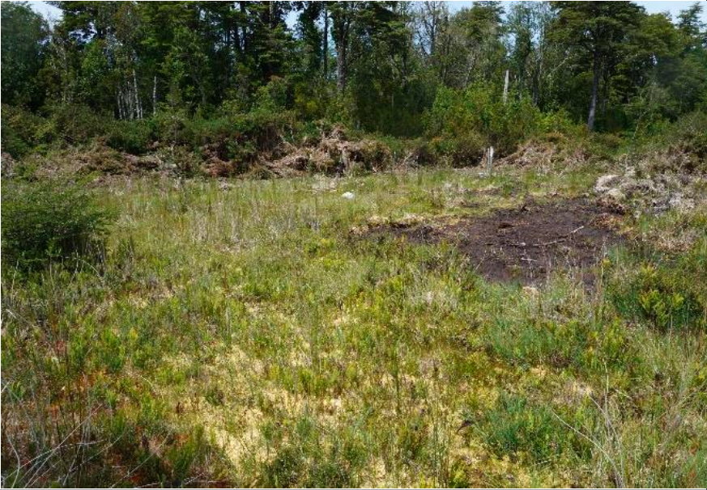
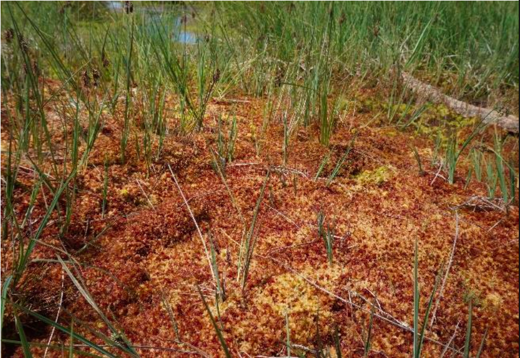
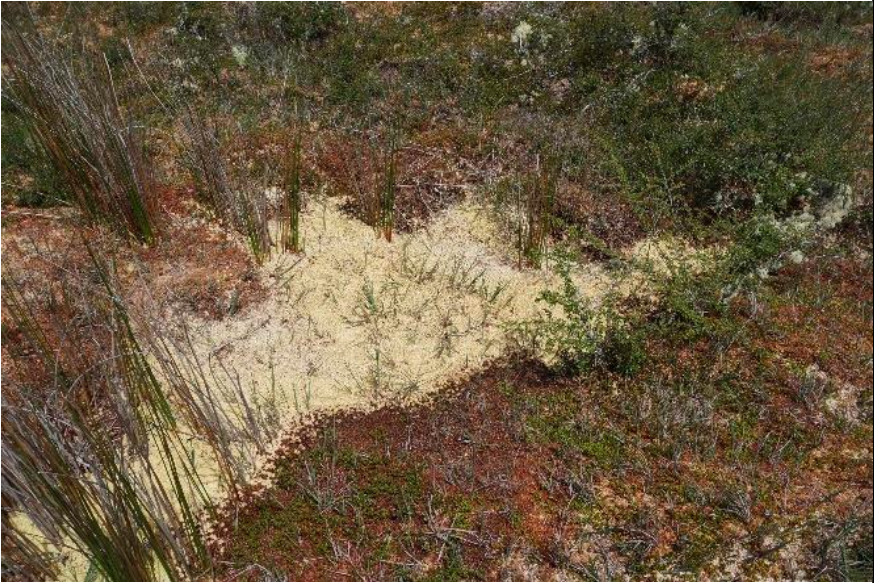
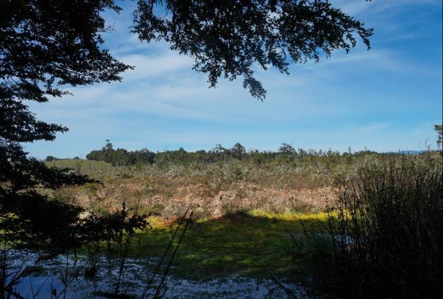
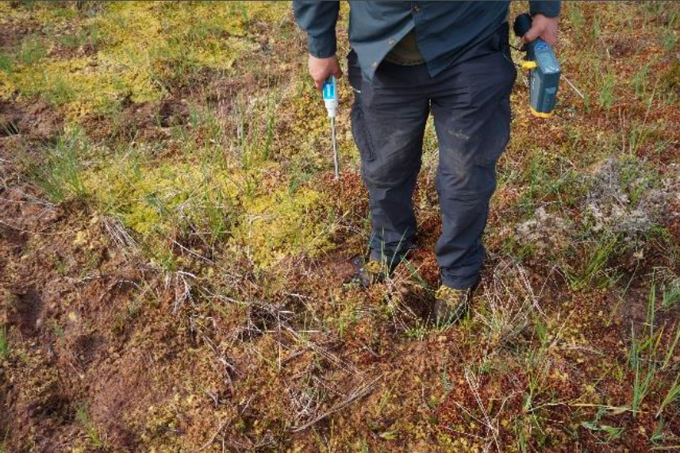
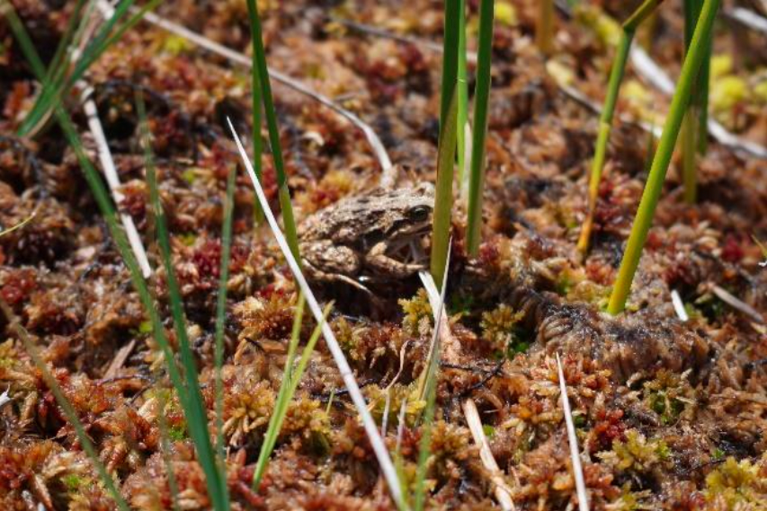

Ecosistemas Protegidos
Turba
Las turberas solo cubren el 3 % de la superficie terrestre del planeta pero almacenan más carbono que todos los bosques de la Tierra – si se mantienen humedas.
- Definición:
-
El término turba debe ser entendido como un sedimento natural de tipo fitógeno, poroso, no consolidado, constituido por materia orgánica parcialmente descompuesta, acumulada en un ambiente saturado de agua. De esta forma, se puede entender al concepto de turbera como un depósito de turba con un espesor de, al menos, 30 cm (Hauser 1996)
- Formación:
-
Según (Hauser 1996), el origen de las turberas se encuentra en las eras glaciares del Pleistoceno, cuando grandes extensiones de casquetes glaciares cubrieron el valle central de la Región de Los Lagos, incluyendo a la Isla Grande de Chiloé. El posterior retiro de los glaciares dejó masas de agua tierra adentro, formando los grandes lagos y lagunas glaciares que en la actualidad componen el paisaje de la región.
En el caso de Chiloé, zona en la que se establecieron las condiciones climáticas ideales para el desarrollo del musgo del género Sphagnum, lo que permitió la acumulación de materia orgánica en depresiones del relieve de la isla con alto contenido de humedad Figure 1 (a). Este proceso de acumulación del musgo se consolidó en la formación de extensas turberas Figure 1 (b) y Figure 1 (c) . [Hauser (1996)]

- Botánicamente (Chiloé):
-
Botánicamente, el pompón pertenece al Reino de las Plantas, a la División Bryophyta, a la Clase Musci y a la Familia de las Sphagnaceas. Esta familia comprende sólo un género, Sphagnum, compuesto por más de 300 especies descritas. En el archipiélago de Chiloé conviven varias especies de este género. La más abundante es S. magellanicum, que se caracteriza por su color rojo, talla relativamente robusta y hojas con ápice obtuso. Suele cubrir grandes superficies con mal drenaje en terrenos abiertos o cubriendo el suelo de los tepuales (bosques formados por la mirtácea Tepualia stipularis), donde se desarrolla con extraordinario vigor. Existen además, al menos 4 especies que se han identificado en la zona norte de la Isla: S. fimbriatum, S. falcatulum, S. recurvum y S. cuspidatum var. cuspidatum. Adicionalmente, la literatura cita otras 2 especies para la Isla: S. acutifolium y S. subnitens.Todas estas especies son de difícil identificación, siendo su morfología celular y la anatomía foliar la base de su clasificación (Zegers et al. 2006)
- Caracterización:
-
Una de las características relevantes de las turberas de Sphagnum es que presenta una matriz continua superficial de musgos sobre una capa de turba que puede alcanzar varios metros de profundidad (Díaz et al. 2008). Según el mismo autor, entre otras características relevantes de este tipo de turberas se encuentran:
La turba que la compone es de origen vegetal y se encuentra en distintos estados de descomposición anaeróbica. Figure 1
El estrato superficial es biológicamente activo, conformado por asociaciones de especies, entre las que predominan plantas con gran capacidad para retener humedad Figure 1 (b).
El musgo Sphagnum forma un ambiente pobre en nutrientes (baja concentración de nitrógeno), ácido, anóxico y frío, lo que previene la presencia de hongos y bacterias que descomponen al material muerto Figure 1 (c).
Tiene una gran capacidad de absorción de agua (hasta 20 veces su peso seco en agua) Figure 1 (e)
Su fuente de agua proviene de ríos y/o de la lluvia Figure 1 (d).
Es un ecosistema de humedal con flora y fauna única y especializada.






- Extracción:
- Como Problema …
TO-DO:
Descripción de prdocesod e extracción y conexión con problema medio ambiental
Descripción Completa Bosque Esclerofilo (? ROI)
Descripción Completa Humedales Urbanos
Agregar conceptos papers:
cabezas_evaluation_2015 Evaluation of impacts of management in an anthropogenic peatland using field and remote sensing data (Cabezas et al. 2015)
Lopatin et al. - 2019 - Using aboveground vegetation attributes as proxies.pdf (Lopatin et al. 2019)
Lopatin et al. - 2022 - Disturbance alters relationships between soil carb.pdf (Lopatin et al. 2022)